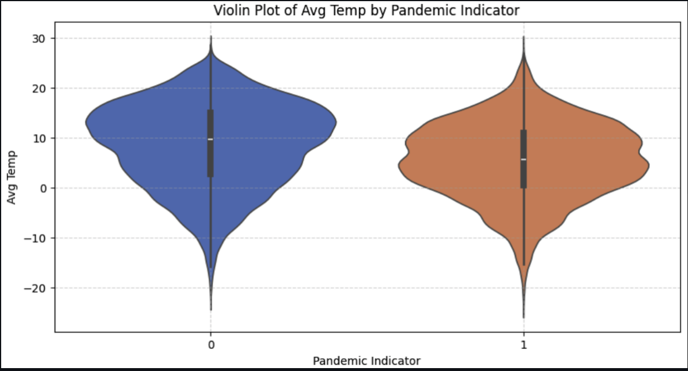

Overview
Leveraging AI methodologies to understand correlations between weather conditions, in particular temperature fluctuations, and the rate of positive COVID-19 tests. This project involves working with public time series data, including COVID data from 2020–2021 and the corresponding weather data.
Skills learned
- Feature Engineering – creating new features (e.g., temperature fluctuations) for predictive modeling.
- Data Cleaning & Preprocessing – handling missing values, outlier removal, deduplication, feature engineering (e.g., Temp Flux).
- Exploratory Data Analysis (EDA) – visualizations (heatmaps, pair plots, time series plots, scatter plots) to assess feature importance.
- Statistical Modeling & Machine Learning – applying regression (linear, multiple regression), classification (logistic regression, random forest, XGBoost), and ensemble methods.